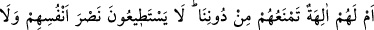
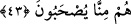

42. De ki: “Allâh’a karşı sizi gece gündüz kim koruyacak?” Buna rağmen onlar
Rablerini anmaktan yüz çevirirler.
Ey Muhammed (a.s.), başlarına kakmak ve kendilerini susturmak için alay edenlere
“De ki: “Gece gündüz sizi Rahmân’dan” yâni, gece gündüz başınıza gelmesini hak
ettiğiniz Rahmân’ın azâbından eğer O dilerse “kim koruyacak?” Yâni O’nun azâbını
sizden ancak O uzaklaştırabilir.
Burada “er-Rahmân” isminin zikredilmesi, O’nun umûmî rahmetinden başka onları
koruyacak hiçbir şey bulunmadığına ve azâbın ânîden gelmesini de onun mühlet
tanımasının alıkoyduğuna dikkat çekmek içindir. “Gece”nin “gündüz”den önce
zikredilmesi, genellikle felâketlerin gece meydana gelmesi ve gece gelen belâların daha
şiddetli olması sebebiyledir.
“Buna rağmen onlar Rablerini anmaktan yüz çevirirler.” Allah’tan korkup içinde
bulundukları emniyeti ve huzûru bir muhâfaza ve koruma sayıp da koruyana yalvarıp
niyâz etmek bir yana Allah Teâlâ’nın zikrini hiç gönüllerine getirmezler. Yâni sen onlara
bu soruyu sormaktan vazgeç. Çünkü onlar, Allâh’ı anmaktan yüz çevirdikleri için bu
sorunun sorulması için elverişli değillerdir.
et-Te’vîlâtü’n-Necmiyye’de şöyle der: “Beşeriyyet hicabları ile perdelenenlerin
düzelme ümidi rûhâniyyet hicabları ile perdelenenlerden daha çoktur. Çünkü onlar
cehâletlerini ikrar ederler. Diğerleri ise kendi sözleriyle mağrurdurlar, aldanmışlardır.
Beşeriyyet hicabları ile örtülü olanlar, beşeriyyetin gerekleri ile meşgul olduklarından
Rablerini zikirden ve O’nu talebden yüz çevirmişlerdir. Rûhânî hicablar ile örtülü
olanlar ise aklî ma‘rifetleri dikkate aldıklarından Rablerini zikirden ve O’nun
ma‘rifetinden yüz çevirmişlerdir.”
Kemâl Hucendî şöyle der:
Gurur putunu kır, çünkü âşıklar yolunda
Kırılan bir put, yüzlerce ibadetten yeğdir
Sâib de şöyle der:
Elbiselerinin yakaları makas gibi ”lâ” şeklinde olduğu hâlde
Mağrur kimseler asla yokluğu düşünmezler
43. Yoksa kendilerini bize karşı savunacak birtakım ilâhları mı var? (O ilâh
dedikleri şeyler) kendilerine bile yardım edecek güçte değildirler. Onlar bizden de